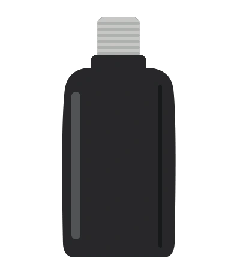
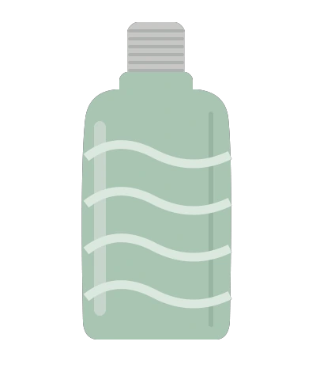
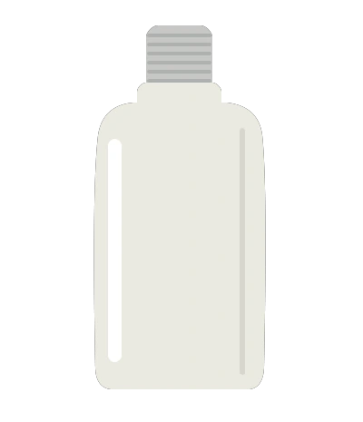
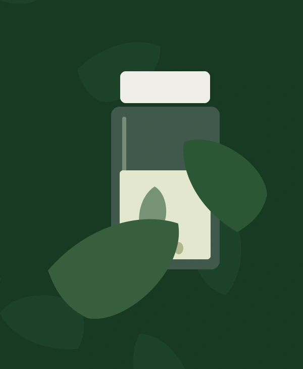

ترکیب تمرکز
رزماری و مرکبات برای شروع یک صبح تازه.

رزماری و مرکبات برای شروع یک صبح تازه.

عطر بادرنجبویه و گیاهان باغ برای عصر.
ترکیبهای گیاهی برای آیین صبح و آرامش عصر؛ با عطر و طعم باغ.
برای آغاز روز
۲۹۰ هزار تومانبرای میانهٔ روز
۳۲۰ هزار تومان
برای آیین پایان روز
۳۲۰ هزار تومان
۱۳۹۹ترکیبها را در کارگاه کوچکمان میسازیم؛ با گیاهانی که از باغها و مزرعههای محلی میرسند.
بسته به طعم مورد علاقه و زمان نوشیدن انتخاب کن. ترکیبها خوراکیاند و برای درمان بیماری طراحی نشدهاند.
در این مجموعه هر سه ترکیب گیاهیاند و بدون شکر افزوده آماده میشوند.
بسته را در جای خنک و خشک، دور از نور مستقیم قرار بده و راهنمای روی برچسب را بخوان.
ترکیب تمرکز · ترکیب هماهنگی · ترکیب شب
با یک لیوان آب و طعمی که دوست داری شروع کن.
صبح · آیین روزمیان دو کار چند نفس آرام بکش و برای خودت وقت بگذار.
بعدازظهر · مکثچراغها را کم کن و با نوشیدنی دلخواهت به روز پایان بده.
عصر · پایان روزکالما · استودیوی مفهومی بیتر
 انتخاب این قالب
انتخاب این قالب